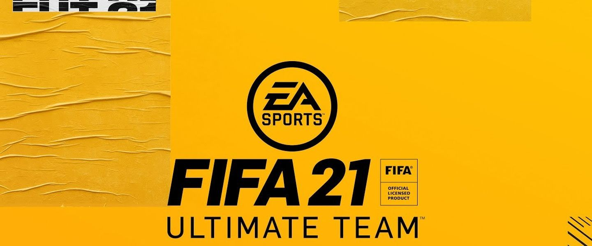

¿Qué es FIFA Ultimate Team?
FIFA Ultimate Team™ (FUT) es el modo más popular de FIFA, al que juegan mensualmente diariamente millones de personas de todo el mundo.

¿Cuáles son los primeros pasos?
Cuando entres en la pestaña de Ultimate Team en FIFA 19, comenzarás tu periplo en FUT y recibirás un sobre de iniciación con suficientes jugadores para poder confeccionar un once inicial, además de la cesión de un artículo de jugador de tu elección que solo podrás utilizar en un número limitado de partidos. Para ayudarte a personalizar tu plantilla, podrás escoger entre una selección de escudos y equipaciones, tanto locales como visitantes, de clubs reales.
¿Cómo consigo mejores jugadores?
Si tu equipo no está plagado de estrellas desde el primer momento, Ultimate Team te ofrece muchas opciones para mejorarlo. Algunas serán rápidas y sencillas, y otras te supondrán todo un reto, aunque también te reportarán mejores recompensas. Las mejores formas de conseguir estas recompensas son jugando partidos y completando una serie de objetivos* dentro del juego. Las recompensas pueden ser monedas de FUT, sobres digitales con jugadores y consumibles, o una mezcla de ambas cosas. Cuando hayas conseguido bastantes monedas, podrás utilizarlas para comprar más sobres en la tienda o para pujar por jugadores en el Mercado de transferibles de FUT.
¿Qué más puedo hacer en FUT?
Cuando domines los aspectos básicos, podrás profundizar más en el enorme mundo de FIFA Ultimate Team. Con los nuevos iconos de FUT podrás añadir a tu plantilla jugadores legendarios como Ronaldo Nazário o Ronaldinho. Estos artículos únicos representan diferentes momentos de las carreras de jugadores emblemáticos.
Pincha aqui para ver el listado de Iconos